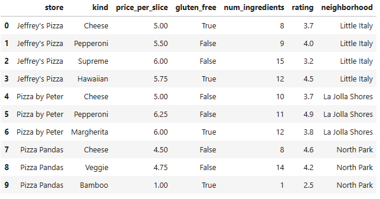
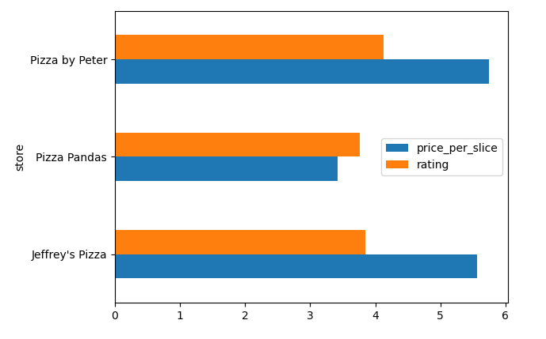

← return to practice.dsc10.com
Instructor(s): Peter Chi, Sam Lau
This exam was administered in-person. Students were allowed one page of double-sided handwritten notes. No calculators were allowed. Students had 50 minutes to take this exam. This exam is also available as a PDF here.
Note (groupby / pandas 2.0): Pandas 2.0+ no longer
silently drops columns that can’t be aggregated after a
groupby, so code written for older pandas may behave
differently or raise errors. In these practice materials we use
.get() to select the column(s) we want after
.groupby(...).mean() (or other aggregations) so that our
solutions run on current pandas. On real exams you will not be penalized
for omitting .get() when the old behavior would have
produced the same answer.
Living in San Diego, we have a plethora of great food options, especially pizza!
In this exam, we’ll work with a dataset of pizza slices sold at
fictional pizza shops in San Diego. Each row in the DataFrame
pizza corresponds to a type of pizza slice, specific to the
store in which it is sold.
The DataFrame pizza contains the following columns:
"store" (str): The name of the pizza
store."kind" (str): The kind of pizza slice
(cheese, pepperoni, supreme, etc)."price_per_slice" (float): The price of a
single slice of pizza."gluten_free" (bool): Whether or not the
pizza slice is also offered in a gluten-free version."num_ingredients" (int): The number of
ingredients required to make the pizza slice."rating" (float): The average rating—out
of 5—of the pizza slice."neighborhood" (str): The neighborhood
where the pizza store is located.The first 10 rows of the DataFrame pizza are shown
below, but the full DataFrame is much larger.

Assume that we have already run import babypandas as bpd
and import numpy as np.
Which column of the pizza DataFrame would be an
appropriate index?
"store"
"kind"
"rating"
"neighborhood"
None of these
Answer: None of these.
Explanation:
An index needs unique values for each row. Let’s check each option:
"store": Multiple slices from the same restaurant — not
unique."kind": Multiple restaurants sell the same kind — not
unique."rating": Multiple pizzas can have the same rating —
not unique."neighborhood": Multiple places per neighborhood — not
unique.None of these columns uniquely identify each row, so none work as an index on their own.
The average score on this problem was 67%.
Suppose you want to see if there is a relationship between
num_ingredients and price. Which visualization
will best enable you to investigate this?
Overlaid histograms of num_ingredients and
price.
A bar chart of the averages of num_ingredients for each
value of price.
A bar chart of the averages of price for each value of
num_ingredients.
A scatter plot of price
vs. num_ingredients.
Answer: A scatter plot of price
vs. num_ingredients.
Explanation:
Both variables are numerical. A scatter plot is the right choice for two numerical variables — you can see the relationship, trend, and individual points.
The other options:
The average score on this problem was 77%.
Fill in the blanks to create a horizontal bar chart showing both the
average price_per_slice and average rating for
each store side by side. On a DataFrame of just the 10 rows shown in the
data description, it would look like the image below

(pizza._____(i)______
.groupby("store")._____(ii)_____
.plot(__(iii)__));Answer:
get(["store", "price_per_slice", "rating"]), then
mean(), then plot with
kind="barh" (see below).
(i)
get(["store", "price_per_slice", "rating"])
(ii) mean()
(iii) kind="barh"
Full chain:
pizza.get(["store", "price_per_slice", "rating"]).groupby("store").mean().plot(kind="barh")
Explanation:
.get(["store", "price_per_slice", "rating"]) — Select
the columns we need (use a list for multiple columns). Names match the
Data Description (price_per_slice in code)..groupby("store") — Group by store..mean() — Average price_per_slice and
rating within each store..plot(kind="barh") — Horizontal bar chart
("h" means horizontal).
The average score on this problem was 83%.
The average score on this problem was 90%.
The average score on this problem was 57%.
Fill in the blanks below so that the expression evaluates to a
float that is the highest rating of any pizza slice that
has more than 10 ingredients.
pizza[_____(a)_____]._____(b)_____Answer:
pizza[pizza.get("num_ingredients") > 10].get("rating").max()
with blanks filled as below.
(a)
pizza.get("num_ingredients") > 10
(b) get("rating").max()
Full expression:
pizza[pizza.get("num_ingredients") > 10].get("rating").max()
The average score on this problem was 87%.
What can go in blank (b)? Select all that apply.
get("rating").apply(max)
get("rating").max()
sort_values("rating", ascending=False).get("rating").iloc[0]
sort_values("rating", ascending=True).get("rating").iloc[-1]
None of the above
Answer: get("rating").max(),
sort_values("rating", ascending=False).get("rating").iloc[0],
and
sort_values("rating", ascending=True).get("rating").iloc[-1]
(select all that apply).
Explanation:
pizza.get("num_ingredients") > 10 creates a boolean
Series that is True for rows where
num_ingredients > 10. This goes inside the square
brackets to filter the DataFrame.
After filtering, we need the max rating. Three approaches work:
.get("rating").max() —
direct; gets the "rating" column and finds the
maximum..sort_values("rating", ascending=False).get("rating").iloc[0]
— sort high to low, take the first element..sort_values("rating", ascending=True).get("rating").iloc[-1]
— sort low to high, take the last element..get("rating").apply(max) does not
work: .apply() applies a function to each element
individually, not to the whole Series. We want .max(),
which aggregates the column.
The average score on this problem was 76%.
First, the following code takes the first 10 rows of the
pizza DataFrame and stores them into pizza10
(thus pizza10 consists of exactly the 10 rows shown on the
Data Description page):
pizza10 = pizza.take(np.arange(10))Next, consider the code below.
positions = np.arange(pizza10.shape[0])
result = positions[pizza10.get("rating") > 4].sum()Hint: while positions is an array, the
behavior of the code in the last line above is analogous to a query from
a DataFrame.
What does result represent?
The number of pizzas in pizza10 with rating > 4
The sum of the ratings in pizza10 that are greater than
4
The sum of the index positions from pizza10 for pizzas
with rating > 4
A Series of positions from pizza10 for pizzas with
rating > 4
The average rating of pizzas from pizza10 that have a
rating > 4
Answer: The sum of the index positions from
pizza10 for pizzas with rating > 4.
Explanation:
positions is the array
[0, 1, 2, 3, 4, 5, 6, 7, 8, 9].
positions[pizza10.get("rating") > 4] filters this array
to keep only the positions where rating > 4. Then
.sum() adds up those position numbers (not
the ratings themselves).
The average score on this problem was 72%.
What does result evaluate to?
4
11
15
23
46
Answer: 23.
Explanation:
From the Data Description page, rows with rating > 4
(strictly greater) are at:
Sum: 3 + 5 + 7 + 8 = 23.
Note: Position 1 has rating = 4.0 exactly, which is not > 4.
The average score on this problem was 74%.
The Best Pizza Neighborhood Contest is coming up! For this contest, we want to find the neighborhood with the highest average rating for a slice of pizza. Fill in the blanks below so that the expression evaluates to the name of this neighborhood (as a string).
pizza.get([___(a)___]).groupby(___(b)___)
.___(c)___.sort_values(__(d)__, ascending=False)
._____(e)_____(a)
Answer: ["rating", "neighborhood"]
The average score on this problem was 76%.
(b)
Answer: "neighborhood"
The average score on this problem was 84%.
(c)
Answer: mean()
The average score on this problem was 85%.
(d)
Answer: by="rating"
The average score on this problem was 88%.
(e)
Answer: index[0]
Explanation (full pipeline):
.get(["rating", "neighborhood"]) — keep both columns:
"rating" to average and "neighborhood" to
group by..groupby("neighborhood") — one group per
neighborhood..mean() — average "rating" within each
neighborhood (one row per neighborhood)..sort_values(by="rating", ascending=False) — sort by
average rating, highest first..index[0] — after sorting, the first row’s index label
is the name of the neighborhood with the highest average rating (a
string).
The average score on this problem was 53%.
The DSC 10 staff is planning their quarterly pizza party, and they want to make sure that there are options for everyone. They’re trying to find the total number of gluten-free pizza slice options in the San Diego area. Select all lines of code that correctly evaluate to the integer corresponding to the total number of gluten-free pizza slice options.
pizza.set_index("store").get("gluten_free").sum()
pizza.get(["gluten_free", "store"]).groupby("store").sum()
pizza[pizza.get("gluten_free")].get("gluten_free").count()
pizza[pizza.get("gluten_free")].shape[0]
pizza.set_index("store").get("gluten_free").count()
pizza.get("gluten_free").shape[0]
Answer:
pizza.set_index("store").get("gluten_free").sum(),
pizza[pizza.get("gluten_free")].get("gluten_free").count(),
and
pizza[pizza.get("gluten_free")].shape[0] (select all that
apply).
Select:
pizza.set_index("store").get("gluten_free").sum() —
True counts as 1, so this sums to the total number of
gluten-free rows.
pizza[pizza.get("gluten_free")].get("gluten_free").count()
— filter to gluten-free rows, then count non-null values in that
column.
pizza[pizza.get("gluten_free")].shape[0] — filter to
gluten-free rows, then count rows.
Do not select:
pizza.get(["gluten_free", "store"]).groupby("store").sum()
— returns per-store totals (multiple numbers), not one
integer for the whole table.
pizza.set_index("store").get("gluten_free").count()
— counts all rows (non-null booleans), not only
True.
pizza.get("gluten_free").shape[0] — length of the
Series is the total number of rows in
pizza, not the number of gluten-free slices.
The average score on this problem was 65%.
At Pizza by Peter, head chefs Bianca and Ella make each pizza, either together or alone. For any given pizza, there’s a chance that the chefs mess up and the final product isn’t suitable to serve. The probabilities are given below:
(a) Suppose that Ella makes one pizza alone, Bianca makes one pizza alone, and their suitability to serve when they each work alone is independent of each other. What is the probability that at least one of the pizzas is not suitable to serve? If it is possible to solve, express your final answer as a single fraction or decimal. Note: “Not enough information” is also a possible answer choice.
Answer: \frac{1}{2} (or 0.5).
Explanation:
Use the complement rule: P(\text{at least one not suitable}) = 1 - P(\text{both suitable}).
Independent, so both suitable: \frac{3}{4} \cdot \frac{2}{3} = \frac{1}{2}.
At least one not suitable: 1 - \frac{1}{2} = \frac{1}{2}.
The average score on this problem was 57%.
(b) Let A be the event that Ella worked on the pizza (either alone or with Bianca), and B be the event that the pizza is suitable to serve.
Suppose that for a randomly selected pizza,
Using only this information and the information from the 4 bullet points at the top of the question, what is P(A \text{ or } B)? If it is possible to solve, express your final answer as a single fraction or decimal. Note: “Not enough information” is also a possible answer choice.
Answer: Not enough information.
Explanation:
P(A \cup B) = P(A) + P(B) - P(A \cap B). We know P(A)=\frac{1}{4} and P(B)=\frac{3}{5}, but P(A \cap B) is not determined by the given bullets alone, so the union cannot be found from what is given.
The average score on this problem was 45%.
Recall from Question 3 that the DataFrame pizza10
consists of exactly the 10 rows shown on the Data Description page. Now
consider the following code:
neighborhood_counts = (pizza10.groupby('neighborhood')
.count().get(['rating']))What type of object is neighborhood_counts?
A DataFrame with 3 rows and 1 column
A DataFrame with 10 rows and 1 column
A Series with 3 elements where the index contains neighborhood names
A Series with 3 elements where the index is 0, 1, 2
An array with 3 elements
Answer: A DataFrame with 3 rows and 1 column.
Explanation:
groupby("neighborhood").count() has one row per
neighborhood (3 neighborhoods in pizza10).
.get(["rating"]) keeps a single column as a one-column
DataFrame.
The average score on this problem was 51%.
We want to apply a function to the neighborhood names (which are
currently in the index). Fill in the blanks to complete the code below
so that neighborhood_firstchar is a Series where each
element is the first letter of the entire string consisting of each
neighborhood name. Note that your answer to (ii) may need to contain
multiple methods sequentially.
def first_letter(s):
____(i)____
neighborhood_firstchar = neighborhood_counts.________(ii)________Answer: (i)
return s[0]; (ii)
reset_index().get("neighborhood").apply(first_letter).
Explanation:
first_letter returns the first character of a string.
Neighborhood names live in the index of
neighborhood_counts. reset_index() turns that
index into a column; .get("neighborhood") selects those
names as a Series; .apply(first_letter) applies the
function to each name.
The average score on this problem was 49%.
The average score on this problem was 62%.
A student at UCSD runs a food Instagram account, @ucsdfoodeater. They go around San Diego trying pizza at different restaurants and keep notes on what kinds of pizza they have tried and where.
They keep their notes in a DataFrame called notes; in
the notes DataFrame, the index is the
pizza kind, and the restaurants_tried column is a list of
the restaurants where they’ve tried that kind.
notes = bpd.DataFrame().assign(
kind=["Cheese", "Pepperoni", "Veggie", "Margherita",
"Hawaiian", "Supreme", "BBQ Chicken", "White"],
restaurants_tried=[
["Jeffrey's Pizza", "Pizza Pandas"],
["Jeffrey's Pizza", "Pizza by Peter"],
["Pizza Pandas"],
["Pizza by Peter"],
["Jeffrey's Pizza"],
["Jeffrey's Pizza"],
["Regents Pizzeria"],
["Pizza on Pearl"]
]
).set_index("kind")The notes DataFrame has 8 rows. Note that some pizza
kinds in notes do not appear in pizza, and
some kinds in pizza do not appear in
notes.
Recall again that pizza10 was created in Question 3,
containing exactly the 10 rows shown on the Data Description page. What
would the following expression evaluate to?
pizza10.merge(notes, left_on="kind", right_index=True).shape[0]0
6
9
10
Cannot be determined
Answer: 9.
Explanation:
Each row of pizza10 merges with notes on
kind. Every kind except "Bamboo" appears in
notes, so 9 rows match; "Bamboo" has no match
in notes.
The average score on this problem was 65%.
Which of the following expressions evaluate to the same value as part (a)? Select all that apply.
pizza10.merge(notes.reset_index(), on="kind").shape[0]
pizza10.merge(notes, on="kind").shape[0]
notes.merge(pizza10, left_index=True, right_on="kind").shape[0]
notes.merge(pizza10, left_index=True, right_on="store").shape[0]
notes.merge(pizza10.reset_index(), on="kind").shape[0]
Answer:
pizza10.merge(notes.reset_index(), on="kind").shape[0]
and
notes.merge(pizza10, left_index=True, right_on="kind").shape[0]
(select all that apply).
Select:
pizza10.merge(notes.reset_index(), on="kind").shape[0]
— reset_index() puts kind in the columns so
merging on "kind" matches part (a).
notes.merge(pizza10, left_index=True, right_on="kind").shape[0]
— merge notes’s index (kind) to
pizza10’s "kind" column.
Do not select:
pizza10.merge(notes, on="kind") — kind
is the index of notes, not a column; this
merge is not set up correctly.
notes.merge(pizza10, left_index=True, right_on="store")
— wrong join key.
notes.merge(pizza10.reset_index(), on="kind") —
after reset_index() on pizza10, the merge key
is not set up the same way as in the working patterns above (per the
official key, do not select this).
The average score on this problem was 80%.
DoorDash is having a special promotion! This promotion allows Ray to
order four random pizza slices from the pizza DataFrame,
but he only wants to eat the best slices—according to the ratings. He
decides to pick the first two of those random slices and compare their
ratings to the other two slices. He will eat only if the sum of the
ratings of his two slices is greater than the sum of the ratings of the
other two slices.
Fill in the blanks in the code below so that prob_eats
evaluates to an estimate of the probability that Ray gets to eat.
repetitions = 1000
count_eats = 0
for i in np.arange(repetitions):
promo_ratings = np.random.choice(__(a)__, 4, replace=False)
ray_sum_of_ratings = _____(b)_____
other_sum_of_ratings = _____(c)_____
if ray_sum_of_ratings > other_sum_of_ratings:
count_eats = ____(d)____
prob_eats = _____(e)_____(a)
Answer: pizza.get("rating")
Sample four distinct ratings without replacement (four random slices by rating value).
The average score on this problem was 45%.
(b)
Answer:
promo_ratings[0] + promo_ratings[1]
Sum of the ratings for Ray’s first two sampled values.
The average score on this problem was 45%.
(c)
Answer:
promo_ratings[2] + promo_ratings[3]
Sum of the ratings for the other two sampled values.
The average score on this problem was 45%.
(d)
Answer: count_eats + 1
So the line reads count_eats = count_eats + 1 when Ray
eats.
The average score on this problem was 77%.
(e)
Answer: count_eats / repetitions
Monte Carlo estimate of the probability.
The average score on this problem was 80%.
Pizza by Peter awards loyalty points: every third slice you purchase from them earns 2^i points, starting from the 1st slice. For example, the 1st, 4th, 7th and 10th slices that a customer purchases each earn 2^i loyalty points where i is 1, 4, 7 and 10 respectively.
Without using the + operator, write a one-line
expression that evaluates to the total loyalty
points from those four slices.
Answer:
(2**(np.arange(1, 12, 3))).sum()
The 1st, 4th, 7th, and 10th slices earn 2^1, 2^4,
2^7, and 2^{10} points. Exponents 1, 4, 7, 10 are every third integer starting
at 1: np.arange(1, 12, 3).
Explanation:
np.arange(1, 12, 3) gives [1, 4, 7, 10];
2** raises 2 to each power; .sum() adds them
(without using binary + in your source).
Alternatives:
np.sum(np.array([2**1, 2**4, 2**7, 2**10])), or
(2**(np.arange(0, 10, 3) + 1)).sum(), etc.
The average score on this problem was 58%.
The management of Pizza by Peter is rebranding. The new name is the output of the following line of code. Write the new name as a string.
(pizza.get("kind").iloc[6].replace("a", "o") + "!").upper()Answer: "MORGHERITO!"
Explanation:
pizza.get("kind").iloc[6] →
"Margherita"..replace("a", "o") → "Morgherito".+ "!" → "Morgherito!"..upper() →
"MORGHERITO!".
The average score on this problem was 70%.